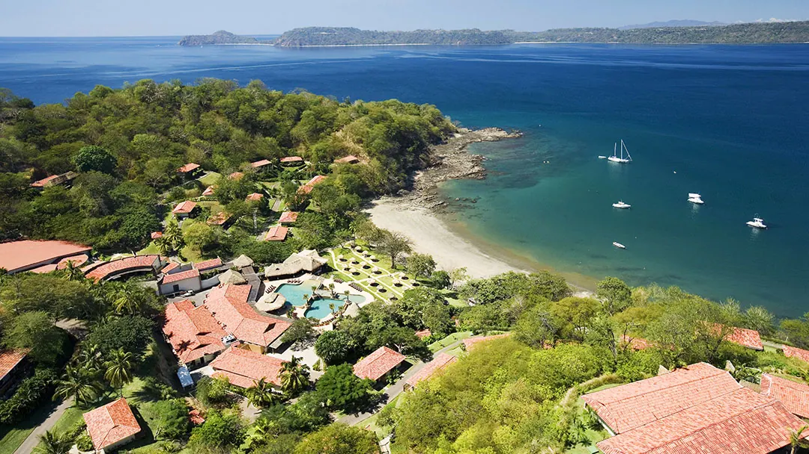
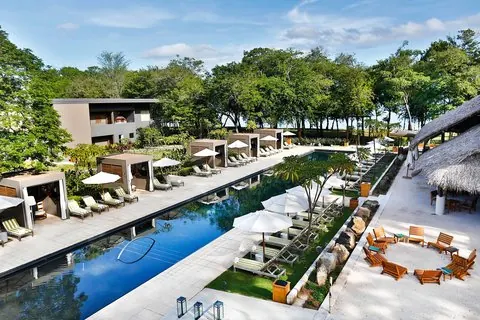
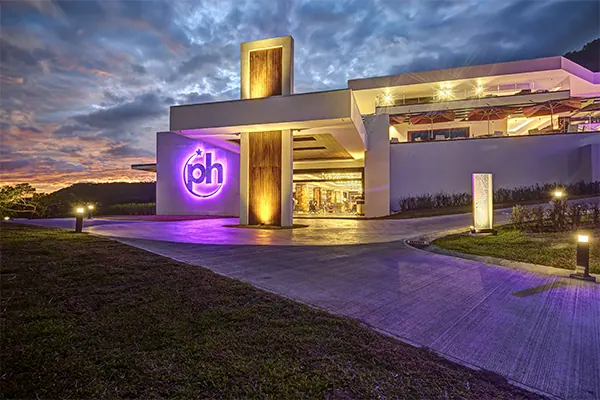
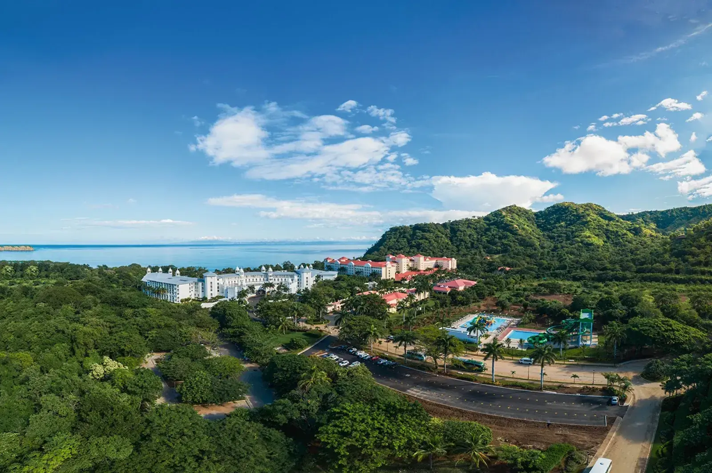
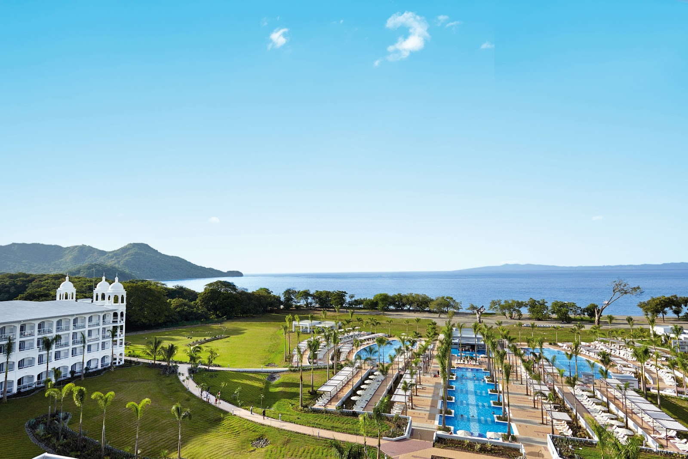

Rincon de la Vieja Private Tours from Papagayo
Explore Rincon de la Vieja privately from Papagayo, with direct resort pickup and experiences ranging from volcanic hiking and geothermal landscapes to hot springs and adventure.

Is Rincon de la Vieja Worth Visiting From Papagayo?
Rincon de la Vieja is one of the best choices from Papagayo for travelers who want to experience Costa Rica's volcanic landscapes without committing to the longer journey to Arenal.
From Peninsula Papagayo, travel time is approximately 102–130 minutes each way, depending on traffic, road conditions and the exact experience selected.
Choose Rincon de la Vieja if volcano landscapes, hiking, hot springs or adventure are priorities. If wildlife is your main goal, a sloth-focused experience may be a better fit.
A Different Side of Guanacaste
Rincon de la Vieja brings together volcanic landscapes, tropical forest and geothermal activity within Guanacaste. Depending on the experience you choose, a private day can focus on hiking, nature, hot springs or adventure — Rincon de la Vieja isn't a single experience, and this guide is here to help you choose the right one.
Rincon de la Vieja Experiences From Papagayo
Rincon de la Vieja Hiking Tour
A private full-day hike through the Las Pailas Trail, past active fumaroles, bubbling mud pots and volcanic terrain.
View Experience →
Oropendola Waterfall & Rio Negro Hot Springs Tour
A gentler half-day private tour to Oropendola Waterfall's turquoise pool and the natural Rio Negro hot springs.
View Experience →
Buena Vista Mega Combo
A private full-day adventure combining zip line, waterslide and hot springs at Buena Vista.
View Experience →Choose Your Rincon de la Vieja Experience
Each experience covers different ground and a different pace, so consider the activity level of everyone in your group before booking.
| Experience | Best For | Activity Level | Duration | Highlights |
|---|---|---|---|---|
| Rincon de la Vieja Hiking Tour | Volcanic landscapes | Easy to Moderate | Full Day (approx. 8 hours) | Las Pailas Trail, fumaroles, mud pots |
| Oropendola Waterfall & Rio Negro Hot Springs Tour | Hot springs & waterfall | Easy | Half Day (approx. 5-6 hours) | Oropendola Waterfall, Rio Negro hot springs |
| Buena Vista Mega Combo | Adventure | Moderate | Full Day (approx. 8 hours) | Zip line, waterslide, hot springs |
Which Rincon de la Vieja Experience Is Right for You?
| If You... | Recommended Experience |
|---|---|
| Want to hike | Rincon de la Vieja Hiking Tour |
| Want hot springs | Oropendola Waterfall & Rio Negro Hot Springs Tour |
| Want adventure | Buena Vista Mega Combo |
Rincon de la Vieja Volcano Hiking From Papagayo
Travelers specifically interested in the volcanic landscape can explore the Las Pailas sector on a private hiking experience from Papagayo.
Las Pailas Trail
- Approx. 3 km (2 miles) of moderate terrain
- Active fumaroles and bubbling mud pots
- Rainforest and volcanic landscapes
- Difficulty: Easy to Moderate · Full Day (approx. 8 hours)
How Far Is Rincon de la Vieja From Papagayo?
| Destination | Approx. Travel Time from Peninsula Papagayo | Best For |
|---|---|---|
| Rincon de la Vieja (Las Pailas sector) | 102–130 min | Volcano hiking & adventure |
Travel time varies by resort, traffic, road conditions and the specific area of Rincon de la Vieja included in your experience. (Computed from real driving distance via Google Routes, Peninsula Papagayo to the Rincon de la Vieja area.)
Rincon de la Vieja or Arenal From Papagayo?
Both are volcanic regions reachable from Papagayo, but they suit different priorities and travel days.
Choose Rincon de la Vieja if...
- You want a shorter drive from Papagayo (approx. 102–130 min)
- Volcanic hiking interests you
- You want Guanacaste adventure or hot springs options
Choose Arenal if...
- Arenal itself is a priority for your trip
- You're comfortable with a significantly longer travel day (approx. 180–230 min)
- Your selected tour includes experiences unique to that itinerary
Rincon de la Vieja or Rio Celeste?
Rincon de la Vieja
Better fit when volcano landscapes, geothermal features, hiking or adventure are the priority.
Rio Celeste
Better fit when rainforest scenery and the blue river are the main reason for your day trip.
Who Is Rincon de la Vieja Best For?
Great choice if...
- You want to experience volcanic landscapes
- Hiking or adventure interests your group
- You have a full day available
- You want something different from Papagayo's coastal environment
Consider another experience if...
- Your priority is seeing sloths — explore our sloth experiences instead
- You only have a short window away from the resort
- You want the easiest, most relaxed option — the Oropendola Waterfall & Hot Springs half-day tour is a gentler alternative to the full hiking day
Private Rincon de la Vieja Tours With Resort Pickup
Wild Papagayo coordinates direct resort pickup and private transportation based on your selected Rincon de la Vieja experience.


Secrets Papagayo Costa Rica
Tours from Secrets Papagayo →
el Mangroove Hotel
Tours from El Mangroove →
Planet Hollywood Costa Rica
Tours from Planet Hollywood →
Hotel Riu Guanacaste
Tours from Riu Guanacaste →
Hotel Riu Palace Costa Rica
Tours from Riu Palace →Why Visit Rincon de la Vieja Privately?
Direct Resort Pickup
Start and finish at your hotel.
Private Transportation
Reserved for your group only.
Dedicated Local Guide
Focused on your itinerary.
Flexible Pacing
Especially valuable on a full-day trip.
No Multiple Hotel Pickups
Your day follows your own schedule.
Help Choosing the Right Experience
Hiking, hot springs or adventure — we help you decide.
Looking Specifically for the Volcano Hike?
This guide helps you compare Rincon de la Vieja experiences and decide what fits your day. For the full itinerary, inclusions and booking details of the hiking tour, view the product page directly.
View Our Rincon de la Vieja Volcano Private Hiking Tour →Frequently Asked Questions
Is Rincon de la Vieja worth visiting from Papagayo?
Yes for travelers who want volcanic landscapes, hiking, hot springs or adventure — it's one of the best choices from Papagayo for that without the longer drive to Arenal. If wildlife is your main goal, a sloth-focused experience may be a better fit.
How far is Rincon de la Vieja from Peninsula Papagayo?
Approximately 102 to 130 minutes each way, based on real driving distance from Peninsula Papagayo.
What is the best Rincon de la Vieja tour from Papagayo?
It depends on your priorities. The Rincon de la Vieja Hiking Tour is best for volcanic landscapes, Oropendola Waterfall & Hot Springs is a gentler half-day option, Buena Vista Mega Combo is best for a varied adventure day with a water slide, and Hacienda Guachipelín is best for a more extreme day with rappelling, rock climbing and a Tarzan swing.
Can I hike at Rincon de la Vieja?
Yes. Our Rincon de la Vieja Hiking Tour follows the Las Pailas Trail, approximately 3 km of moderate terrain past active fumaroles and bubbling mud pots.
How difficult is the Las Pailas hike?
The hiking tour is rated Easy to Moderate over roughly 3 km of moderate terrain, on a full-day private itinerary.
Can I combine hiking with hot springs?
The hiking tour and hot springs tours are separate private experiences. If both interest you, tell us and we can help you plan them across your stay.
Does Wild Papagayo pick up directly from my resort?
Yes. We coordinate direct pickup from Peninsula Papagayo resorts and selected nearby Guanacaste resorts for all Rincon de la Vieja experiences.
Should I visit Rincon de la Vieja or Arenal from Papagayo?
Rincon de la Vieja is the shorter drive (approx. 102–130 min) and a good fit for volcanic hiking, hot springs or adventure. Arenal is a longer day (approx. 180–230 min) worth it if Arenal itself, or an experience unique to that area, is a priority.
PLANNING YOUR VOLCANIC DAY.
Which Side of Rincon de la Vieja Do You Want to Experience?
Tell us where you're staying and whether you're looking for volcanic hiking, hot springs, adventure or a combination. We'll help you choose the private experience that best fits your day from Papagayo.